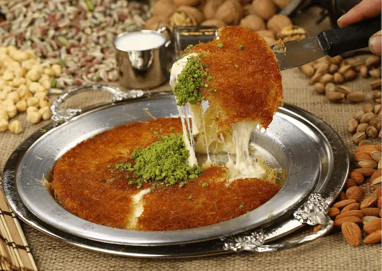
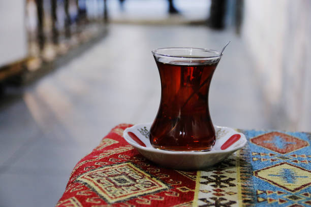
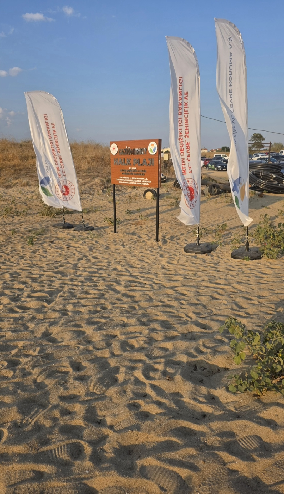
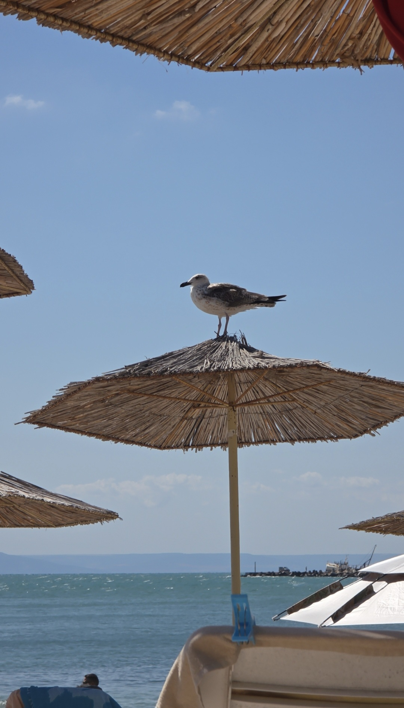
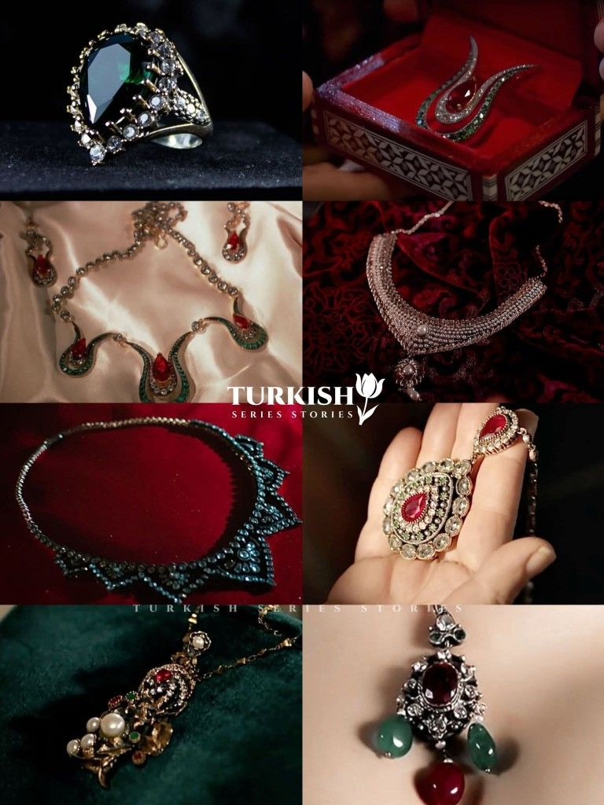
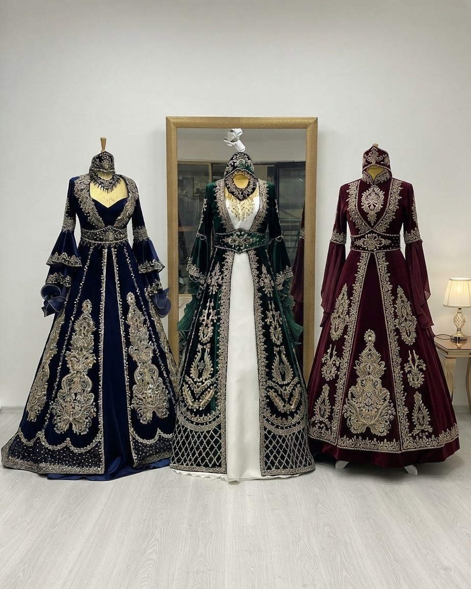

Voici le plage Enez que j'ai visité pendant les vacances

Voici le plage de Tekirdag que j'ai également visité pendant les vacances

Voici le sport connu en Turquie qui est le Gures

Ava Yaman brille dans les séries turques et se distingue aussi en chant, tandis que Burcu Ozberk et Ali Onsoz s'illustrent à l'écran dans des rôles à succès.
Ibrahim Tatlises et Davut Guloglu marquent la musique turque entre voix puissante et rythmes festifs.
Cok guzel hareketler bunlar est une émission de comédie et de théâtre incontournable en Turquie,célèbre pour ses sketchs humoristiques joués sur scène par une troupe talentueuse.

Si vous aimez les séries, je conseille de regarder "Muhtesem Yuzyil" qui contient 139 épisodes,et "Yeni Gelin"qui contient 63 épisodes


Voici les liens qui mènent directement sur les premières épisodes
MUHTESEM YUZYIL YENI GELINEn turquie, les bijoux en or sont très achetés chez le bijoutier (kuyumcu). On choisit l'or de 22k ou 24k pour investir, tandis que l'or de 14k est plutôt utilisé pour être porté tous les jours ou lors d'évènements.

Les bijoux anciens ont un style inspiré de l'époque ottomane, avec des grosses pierres précieuses et des motifs traditionnels comme la tulipe.
Cette bague verte en forme de goutte est inspirée du célèbre bijou de Hürrem Sultan, emblématique de l'époque ottomane.

Voici le Bindalli, c'est une robe traditionnelle que l'on porte spécialement lors de la soiré du henné (kina).
